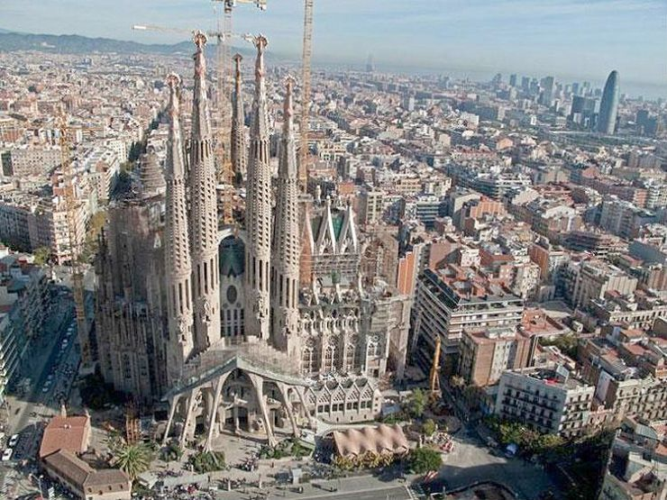
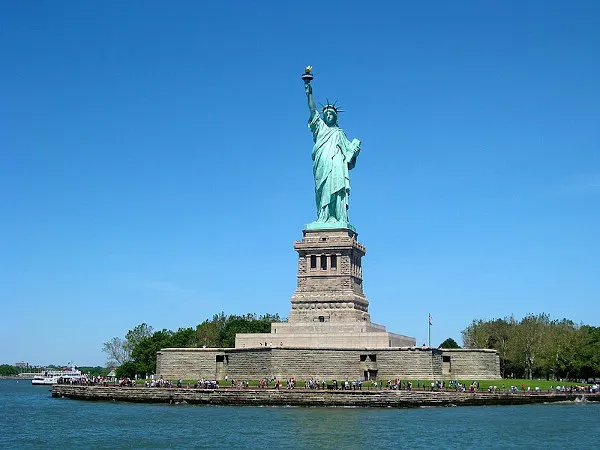
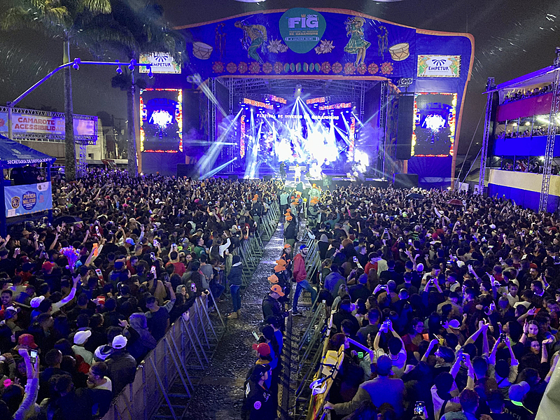

Informações da Cidade
Localização: Agreste pernambucano
Distância da capital: 210 km
Atividade principal: Agropecuária e comércio local

Bem-vindo ao maior acervo digital da nossa cidade.
O padroeiro de Canhotinho é celebrado com muita alegria todo mês de janeiro.




Siga Instagram Oficial da Cultura para ver fotos dos eventos!
Siga o passo a passo para se inscrever
Localização: Agreste pernambucano
Distância da capital: 210 km
Atividade principal: Agropecuária e comércio local
A prefeitura convida todos para a Exposição Raízes na antiga estação ferroviária.